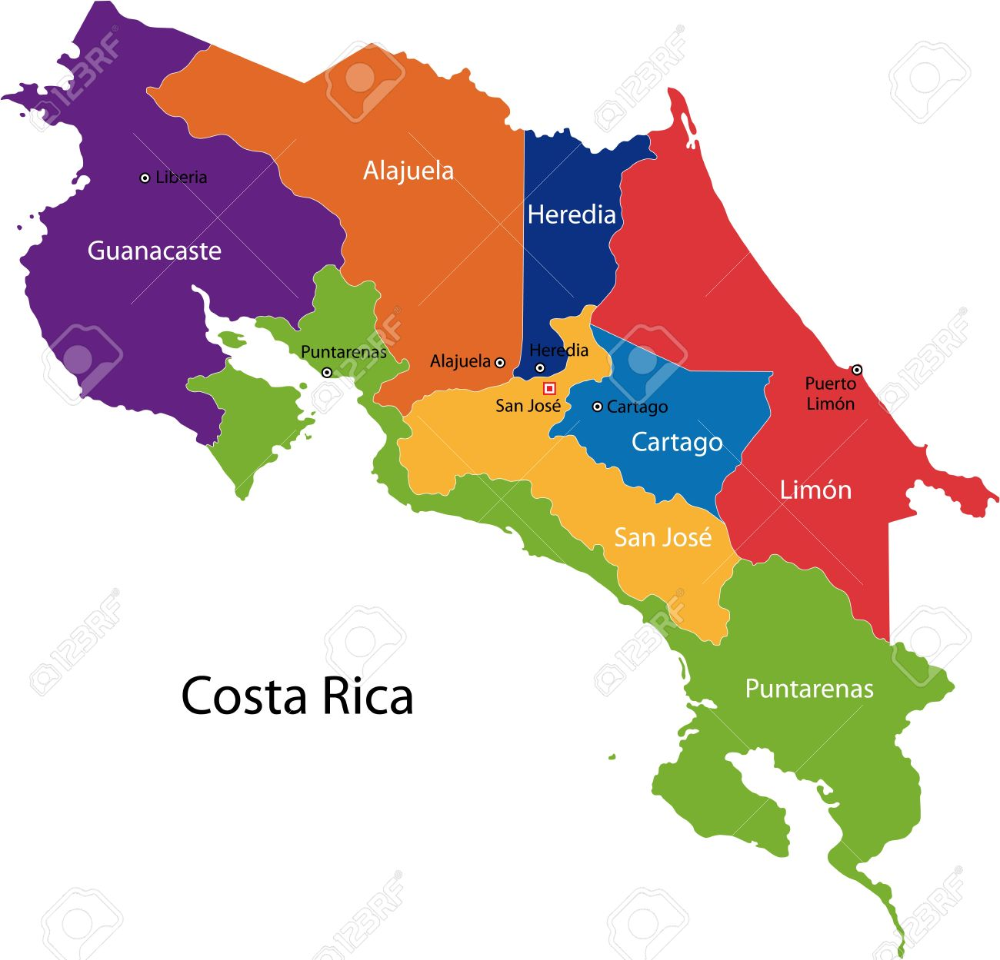
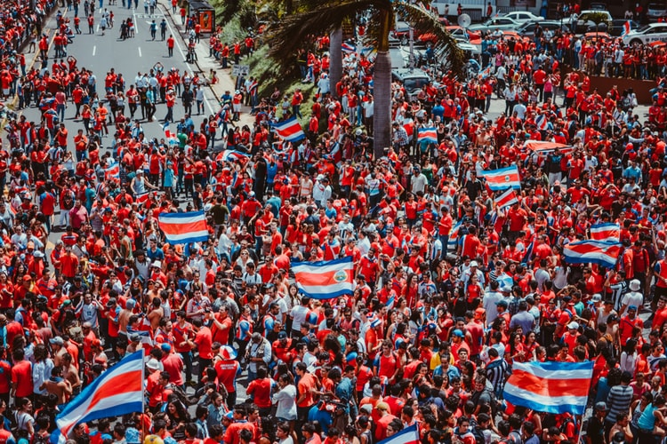
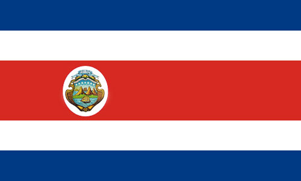
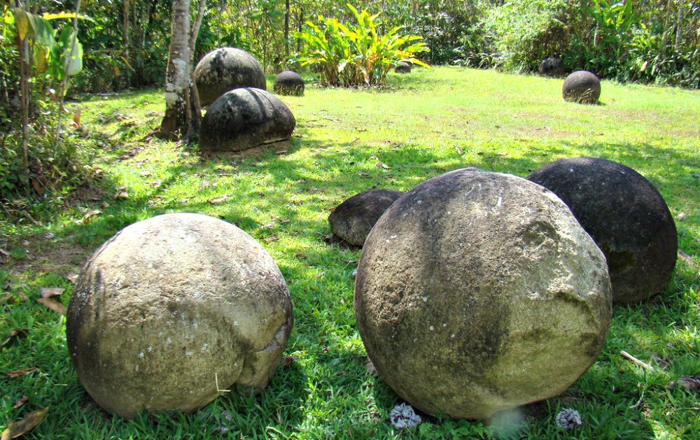
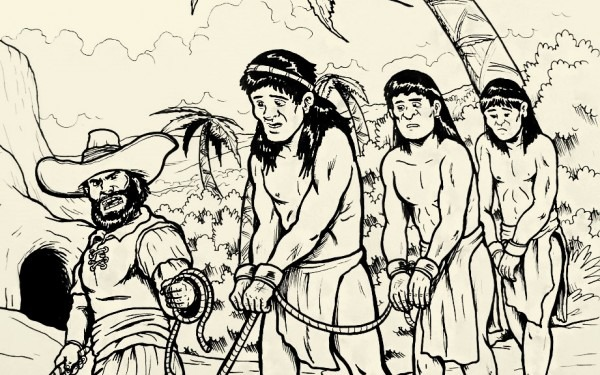
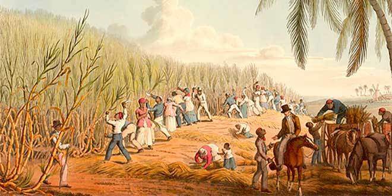
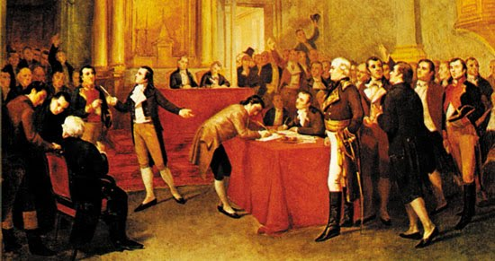
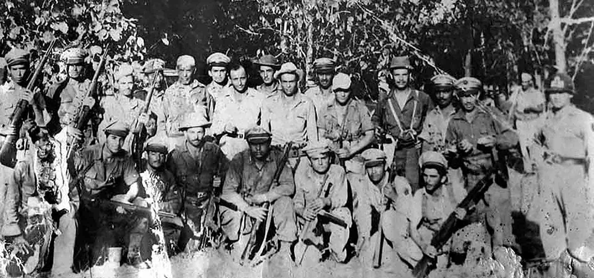
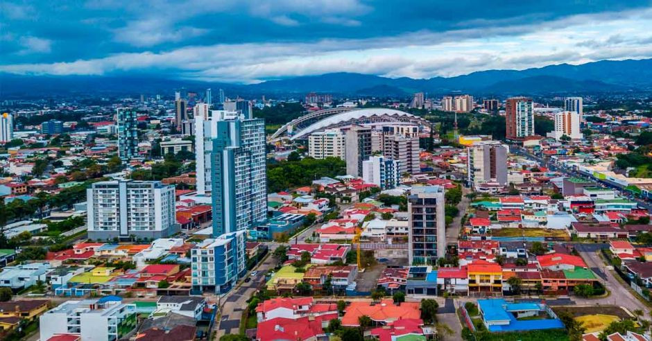
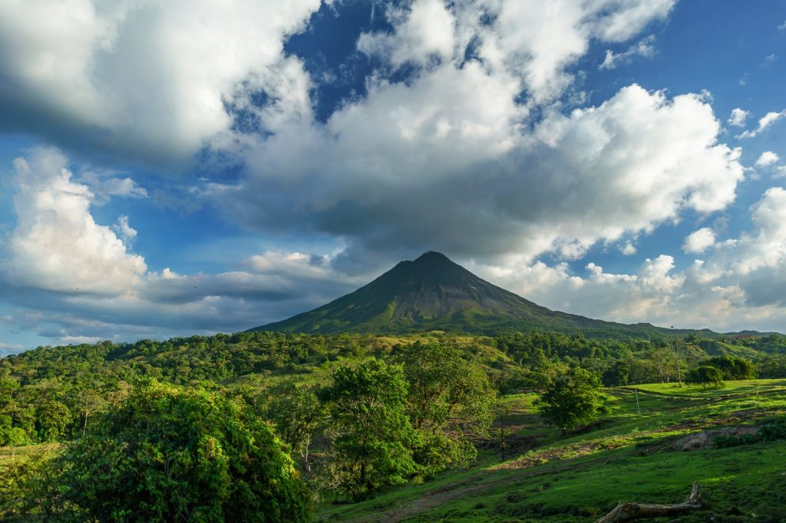

Costa Rica es una nación soberana, organizada como una república presidencialista unitaria compuesta por 7 provincias. Ubicada en América Central.Limita con Nicaragua al norte, el mar Caribe al este, Panamá al sureste y el océano Pacífico al oeste. En cuanto a los bordes marítimos, colinda con Panamá, Nicaragua, Colombia y Ecuador. Su capital, centro político y económico es San José, y su idioma oficial es el español.Posee un territorio de 51,100 km2.
 Posee una población de 5,163,068 habitantes.
 BANDERA DE COSTA RICA
 HISTORIA: Tiempos Prehispánicos: La evidencia más antigua de ocupaciones humanas en Costa Rica se asocia a la llegada de grupos de cazadores-recolectores alrededor de 12.200 años, con el hallazgo en el cantón de Siquirres de 66 asentamientos humanos donde se recuperaron elementos funerarios, petroglifos, basamentos de viviendas, calzadas, herramientas de piedra, alfarería, cerámica, los cuales datan del Paleoindio y que corresponden a la etnia cabécar, constituyéndose en el sitio arqueológico más antiguo de Centroamérica. Conquista Española: Cristóbal Colón llegó a la costa atlántica de Costa Rica el 25 de septiembre de 1502, en su cuarto viaje, visitando la isla Uvita (llamada Quiribrí por los indígenas y bautizada La Huerta por Colón), y el poblado de Cariay.37 Según los diarios escritos por Colón, en el territorio existía mucho oro,37 lo que impulsó a los aventureros a emprender otras exploraciones y sirvió de polo de atracción para los colonizadores. Período Virreinal: Costa Rica fue desde 1574 la dependencia más austral de la Capitanía General de Guatemala, parte del Virreinato de Nueva España, situación en la que permaneció hasta su independencia. La lejanía de la ciudad de Guatemala, el reducido número de oficiales del gobierno y de representantes de la Iglesia, y su carencia de riquezas agrícolas o mineras, provocaron que se encontrara en total abandono por parte de las autoridades españolas, lo cual facilitó que se desarrollara con mucha mayor autonomía que otras provincias de Centroamérica. El interés relativo que mostraron los colonizadores ibéricos hacia esta región modificó algunas de las situaciones características que se dieron en otras naciones, dotando a Costa Rica de algunas peculiaridades. Independencia: Costa Rica se independizó del Imperio español el 15 de septiembre de 1821, junto al resto de la Capitanía General de Guatemala. Después de recibir el pronunciamiento de la ciudad de León, establecido en el "Acta de los Nublados", el ayuntamiento de Cartago emitió el acta del 29 de octubre, declaró la independencia y, el 1 de diciembre, una Junta de Legados promulgó el Pacto de Concordia, la primera Constitución, en la que constituyó su propia forma de gobierno, a cargo de una Junta Superior Gubernativa, se reconocieron los derechos civiles de los habitantes, se abolió la esclavitud y se proclamó la libertad de comercio. Guerra Civil de 1948: La Guerra Civil de Costa Rica fue desencadenada primordialmente por la nulidad de las elecciones de 1948, con el fin de defender la transparencia del sufragio frente a un supuesto fraude, aunque realmente las causas son diversas y complejas, con causas internas y externas que se venían gestando a lo largo de una década. Es la última guerra civil de la historia costarricense, y la última vez que se interrumpió el gobierno constitucional en la historia del país. La Guerra civil se peleó entre el 12 de marzo y el 19 de abril de 1948, y se calcula que hubo unos 4000 muertos en todo el país. Siglo XXI: La Costa Rica del siglo XXI plantea grandes desafíos para el pueblo costarricense y sus gobernantes, con cuestionamientos a su modelo democrático. Al desgaste del bipartidismo, potenciado por escándalos políticos y de corrupción, se ha sumado una larga crisis de gobernabilidad nacional, cuestionamientos a las políticas usadas en temas como ambiente, infraestructura,105106 derechos humanos, seguridad ciudadana,107 el incremento del crimen organizado, problemas en servicios de salud, empleo, vivienda, y crisis en finanzas de instituciones públicas,108 lo que ha desembocado en el desencanto de los ciudadanos. Esto ha impulsado el surgimiento de nuevas organizaciones políticas, lo que se ve reflejado en una conformación multipartidaria de la Asamblea Legislativa, que ha sido la tónica desde 2002. El país se vio afectado por la Crisis económica de 2008-2015. Además, ha visto un incremento en su déficit fiscal entre 2006 y 2018, lo que ha motivado la discusión sobre la aprobación de reformas fiscales, a la vez que se ha puesto en tela de juicio el gasto del gobierno por concepto de convenciones colectivas, altos salarios en instituciones estatales y pensiones de lujo. Durante el 2014 y 2015 el país incrementó sus lazos económicos con Europa, y logró un acuerdo con Alemania de cooperación en educación. En 2015 la FAO premió a Costa Rica por haber reducido el hambre, al reducirse de un 5% a la mitad según cálculos de Naciones Unidas. También se convirtió en el país con mayor expectativa de empleo de Latinoamérica según encuesta de la firma estadounidense Manpower. GEOGRAFÍA: Costa Rica está localizada en el istmo de América Central, entre las latitudes 8° y 12°N, y las longitudes 82° y 86°O. Limita al este con el Mar Caribe y con el Océano Pacífico al oeste, con una extensión total de 1290 km en costas: 212 km en la costa caribeña y 1 016 km en la costa pacífica. Costa Rica es un país muy montañoso y la mayor parte del territorio está formado por elevaciones de entre 900 y 1800 metros sobre el nivel del mar. PROVIENCIAS QUE LA COMPONEN: